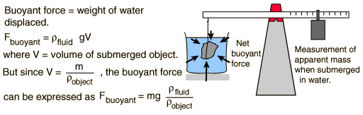

Buoyant Force, General Fluid
Determination of density of fluid

You can determine liquid density using Archimedes principle if you have a standard object of
mass
m
=
grams
and known volume =
V
=
cm^3.
(The density of the standard object in this case is known to be
gram/cm^3)
If this standard object is submerged in a fluid and found to have apparent mass
m'
=
grams
then it has displaced
m - m'
=
grams of the fluid. Since the mass of fluid displaced has been measured, and the volume of liquid corresponding to that mass is known to be the volume of the standard object,
the liquid density is then
While this is a useful experimental procedure, it is more common to use a known liquid to determine the
density of a submerged object
, and the typical process uses
immersion in water
for density determination, as in the classic
Archimedes story
.
Note that in the experimental arrangement, the container of fluid in which the object is submerged is supported on a platform so that the balance scale does not include the measurement of the mass of the water and its container.
Index
Buoyancy concepts
HyperPhysics
*****
Mechanics
*****
Fluids
R Nave
Go Back